산업안전기사 (2019-08-04 기출문제)
1과목: 안전관리론
1. 적성요인에 있어 직업적성을 검사하는 항목이 아닌 것은?
- 지능
- 촉각 적응력
- 형태식별능력
- 운동속도
(정답률: 62%)

2. 라인(Line)형 안전관리조직에 대한 설명으로 옳은 것은?
- 명령계통과 조언이나 권고적 참여가 혼동되기 쉽다.
- 생산부서와의 마찰이 일어나기 쉽다.
- 명령계통이 간단명료하다.
- 생산부분에는 안전에 대한 책임과 권한이 없다.
(정답률: 83%)
3. 새로 손을 얹고 팀의 행동구호를 외치는 무재해 운동 추진 기법의 하나로, 스킨십(Skinship)에 바탕을 두고 팀 전원의 일체감, 연대감을 느끼게 하며, 대뇌피질에 안전태도 형성에 좋은 이미지를 심어주는 기법은?
- Touch and call
- Brain Storming
- Error cause removal
- Safety training observation program
(정답률: 92%)
4. 안전점검의 종류 중 태풍이나 폭우 등의 천재지변이 발생한 후에 실시하는 기계, 기구 및 설비 등에 대한 점검의 명칭은?
- 정기점검
- 수시점검
- 특별점검
- 임시점검
(정답률: 92%)
5. 하인리히 안전론에서 ( )안에 들어갈 단어로 적합한 것은?
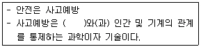
- 물리적 환경
- 화학적 요소
- 위험요인
- 사고 및 재해
(정답률: 61%)
6. 1년간 80건의 재해가 발생한 A사업장은 1000명의 근로자가 1주일당 48시간, 1년간 52주를 근무하고 있다. A사업장의 도수율은? (단, 근로자들은 재해와 관련 없는 사유로 연간 노동시간의 3%를 결근하였다.)
- 31.06
- 32.⑤
- 33.04
- 34.03
(정답률: 57%)
7. 안전보건교육의 단계에 해당하지 않는 것은?
- 지식교육
- 기초교육
- 태도교육
- 기능교육
(정답률: 84%)
8. 위험예지훈련의 문제해결 4라운드에 속하지 않는 것은?
- 현상파악
- 본질추구
- 원인결정
- 대책수립
(정답률: 81%)
9. 산소결핍이 예상되는 맨홀 내에서 작업을 실시할 때의 사고 방지 대책으로 적절하지 않은 것은?
- 작업 시작 전 및 작업 중 충분한 환기 실시
- 작업 장소의 입장 및 퇴장 시 인원점검
- 방진마스크의 보급과 착용 철저
- 작업장과 외부와의 상시 연락을 위한 설비 설치
(정답률: 90%)
10. 안전교육방법 중 강의법에 대한 설명으로 옳지 않은 것은?
- 단기간의 교육 시간 내에 비교적 많은 내용을 전달할 수 있다.
- 다수의 수강자를 대상으로 동시에 교육할 수 있다.
- 다른 교육방법에 비해 수강자의 참여가 제약된다.
- 수강자 개개인의 학습진도를 조절할 수 있다.
(정답률: 84%)
11. 적응기제(適應機制)의 형태 중 방어적 기제에 해당하지 않는 것은?
- 고립
- 보상
- 승화
- 합리화
(정답률: 73%)
12. 부주의의 발생 원인에 포함되지 않는 것은?
- 의식의 단절
- 의식의 우회
- 의식수준의 저하
- 의식의 지배
(정답률: 72%)
13. 안전교육 훈련에 있어 동기부여 방법에 대한 설명으로 가장 거리가 먼 것은?
- 안전 목표를 명확히 설정한다.
- 안전활동의 결과를 평가, 검토하도록 한다.
- 경쟁과 협동을 유발시킨다.
- 동기유발 수준을 과도하게 높인다.
(정답률: 89%)
14. 산업안전보건법령상 유해위험 방지계획서 제출 대상 공사에 해당하는 것은?
- 깊이가 5m 이상인 굴착공사
- 최대지간거리 30m 이상인 교량건설 공사
- 지상 높이 21m 이상인 건축물 공사
- 터널 건설 공사
(정답률: 84%)
15. 스트레스의 요인 중 외부적 자극 요인에 해당하지 않는 것은?
- 자존심의 손상
- 대인관계 갈등
- 가족의 죽음, 질병
- 경제적 어려움
(정답률: 85%)
16. 하인리히 방식의 재해코스트 산정에서 직접비에 해당되지 않은 것은?
- 휴업보상비
- 병상위문금
- 장해특별보상비
- 상병보상연금
(정답률: 61%)
17. 산업안전보건법령상 관리감독자 대상 정기안전보건 교육의 교육내용으로 옳은 것은?
- 작업 개시 전 점검에 관한 사항
- 정리정돈 및 청소에 관한 사항
- 작업공정의 유해ㆍ위험과 재해 예방대책에 관한 사항
- 기계ㆍ기구의 위험성과 작업의 순서 및 동선에 관한 사항
(정답률: 73%)
18. 산업안전보건법령상 ( )에 알맞은 기준은?
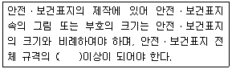
- 20%
- 30%
- 40%
- 50%
(정답률: 65%)
19. 산업안전보건법령상 주로 고음을 차음하고, 저음은 차음하지 않는 방음보호구의 기호로 옳은 것은?
- NRR
- EM
- EP-1
- EP-2
(정답률: 64%)
20. 산업재해의 기본원인 중 “작업정보, 작업방법 및 작업환경” 등이 분류되는 항목은?
- Man
- Machine
- Media
- Management
(정답률: 70%)
2과목: 인간공학 및 시스템안전공학
21. 작업의 강도는 에너지대사율(RMR)에 따라 분류된다. 분류 기간 중, 중(中)작업(보통작업)의 에너지 대사율은?
- 0~1RMR
- 2~4RMR
- 4~7RMR
- 7~9RMR
(정답률: 68%)
22. 산업안전보건법령상 유해ㆍ위험방지계획서의 제출 시 첨부하는 서류에 포함되지 않는 것은?
- 설비 점검 및 유지계획
- 기계ㆍ설비의 배치도면
- 건축물 각 층의 평면도
- 원재료 및 제품의 취급, 제조 등의 작업방법의 개요
(정답률: 44%)
23. 인간의 실수 중 수행해야 할 작업 및 단계를 생략하여 발생하는 오류는?
- omission error
- commission error
- sequence error
- timing error
(정답률: 76%)
24. 초기고장과 마모고장 각각의 고장형태와 그 예방대책에 관한 연결로 틀린 것은?
- 초기고장 - 감소형 - 번인(Burn in)
- 마모고장 - 증가형 - 예방보전(PM)
- 초기고장 - 감소형 - 디버깅(debugging)
- 마모고장 - 증가형 - 스크리닝(screening)
(정답률: 58%)
25. 작업개선을 위하여 도입되는 원리인 ECRS에 포함되지 않는 것은?
- Combine
- Standard
- Eliminate
- Rearrange
(정답률: 74%)
26. 온도와 습도 및 공기 유동이 인체에 미치는 열효과를 하나의 수치로 통합한 경험적 감각지수로, 상대습도 100%일 때의 건구 온도에서 느끼는 것과 동일한 온감을 의미하는 온열조건의 용어는?
- Oxford 지수
- 발한율
- 실효온도
- 열압박지수
(정답률: 75%)
27. 화학설비의 안전성 평가 5단계 중 4단계에 해당하는 것은?
- 안전대책
- 정성적 평가
- 정량적 평가
- 재평가
(정답률: 64%)
28. 양립성의 종류에 포함되지 않는 것은?
- 공간 양립성
- 형태 양립성
- 개념 양립성
- 운동 양립성
(정답률: 70%)
29. 다음 설명에 해당하는 설비보전방식의 유형은?
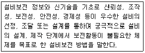
- 개량보전
- 보전예방
- 사후보전
- 일상보전
(정답률: 74%)
30. 원자력 산업과 같이 상당한 안전이 확보되어 있는 장소에서 추가적인 고도의 안전 달성을 목적으로 하고 있으며, 관리, 설계, 생산, 보전 등 광범위한 안전을 도모하기 위하여 개발된 분석기법은?
- DT
- FTA
- THERP
- MORT
(정답률: 66%)
31. 결함수분석(FTA)에 관한 설명으로 틀린 것은?
- 연역적 방법이다.
- 버텀-업(Bottom-Up)방식이다.
- 기능적 결함의 원인을 분석하는데 용이하다.
- 정량적 분석이 가능하다.
(정답률: 75%)
32. 조종-반응비(Control-Response Ratio, C/R비)에 대한 설명 중 틀린 것은?
- 조종장치와 표시장치의 이동 거리 비율을 의미한다.
- C/R비가 클수록 조종장치는 민감하다.
- 최적 C/R비는 조정시간과 이동시간의 교점이다.
- 이동시간과 조정시간을 감안하여 최적 C/R비를 구할 수 있다.
(정답률: 77%)
33. 다음 FT 도에서 최소컷셋(Minimal cut set)으로만 올바르게 나열한 것은?
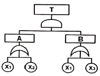
- [X1]
- [X1], [X2]
- [X1, X2, X3]
- [X1, X2], [X1, X3]
(정답률: 70%)
34. 인간의 정보처리 과정 3단계에 포함되지 않는 것은?
- 인지 및 정보처리단계
- 반응단계
- 행동단계
- 인식 및 감지단계
(정답률: 42%)
35. 시각 표시장치보다 청각 표시장치의 사용이 바람직한 경우는?
- 전언이 복잡한 경우
- 전언이 재참조되는 경우
- 전언이 즉각적인 행동을 요구하는 경우
- 직무상 수신자가 한 곳에 머무는 경우
(정답률: 84%)
36. FTA에서 사용하는 수정게이트의 종류 중 3개의 입력현상 중 2개가 발생한 경우에 출력이 생기는 것은?
- 위험지속기호
- 조합 AND 게이트
- 배타적 OR 게이트
- 억제 게이트
(정답률: 78%)
37. 인간의 신뢰도가 0.6, 기계의 신뢰도가 0.9이다. 인간과 기계가 직렬체제로 작업할 때의 신뢰도는?
- 0.32
- 0.54
- 0.75
- 0.96
(정답률: 80%)
38. 8시간 근무를 기준으로 남성작업자 A의 대사량을 측정한 결과, 산소소비량이 1.3 L/min으로 측정되었다. Murrell 방법으로 계산 시, 8시간의 총 근로시간에 포함되어야 할 휴식시간은?
- 124분
- 134분
- 144분
- 154분
(정답률: 48%)
39. 국소진동에 지속적으로 노출된 근로자에게 발생할 수 있으며, 말초혈관 장해로 손가락이 창백해지고 동통을 느끼는 질환의 명칭은?
- 레이노 병(Raynaud's phenomenon)
- 파킨슨 병(Parkinson's disease)
- 규폐증
- C5-dip 현상
(정답률: 77%)
40. 암호체계의 사용상에 있어서, 일반적인 지침에 포함되지 않는 것은?
- 암호의 검출성
- 부호의 양립성
- 암호의 표준화
- 암호의 단일 차원화
(정답률: 74%)
3과목: 기계위험방지기술
41. 연삭기에서 숫돌의 바깥지름이 180mm일 경우 숫돌 고정용 평형플랜지의 지름으로 적합한 것은?
- 30mm 이상
- 40mm 이상
- 50mm 이상
- 60mm 이상
(정답률: 82%)
42. 산업안전보건법령에 따라 산업용 로봇의 작동범위에서 교시 등의 작업을 하는 경우에 로봇에 의한 위험을 방지하기 위한 조치사항으로 틀린 것은?
- 2명 이상의 근로자에게 작업을 시킬 경우의 신호방법을 정한다.
- 작업 중의 매니플레이터 속도에 관한 지침을 정하고 그 지침에 따라 작업한다.
- 작업을 하는 동안 다른 작업자가 작동시킬 수 없도록 기동스위치에 작업 중 표시를 한다.
- 작업에 종사하고 있는 근로자가 이상을 발견하면 즉시 안전담당자에게 보고하고 계속해서 로봇을 운전한다.
(정답률: 86%)
43. 기분무부하 상태에서 지게차 주행 시의 좌우 안정도 기준은? (단, V는 구내최고속도(km/h)이다.)(오류 신고가 접수된 문제입니다. 반드시 정답과 해설을 확인하시기 바랍니다.)
- (15+1.1×V)% 이내
- (15+1.5×V)% 이내
- (20+1.1×V)% 이내
- (20+1.5×V)% 이내
(정답률: 74%)
44. 산업안전보건법령에 따라 사다리식 통로를 설치하는 경우 준수해야 할 기준으로 틀린 것은?
- 사다리식 통로의 기울기는 60°이하로 할 것
- 발판과 벽과의 사이는 15cm 이상의 간격을 유지할 것
- 사다리의 상단은 걸쳐놓은 지점으로부터 60cm 이상 올라가도록 할 것
- 사다리식 통로의 길이가 10m 이상인 경우에는 5m 이내마다 계단참을 설치할 것
(정답률: 60%)
45. 산업안전보건법령에 따른 승강기의 종류에 해당하지 않는 것은?
- 리프트
- 승용 승강기
- 에스컬레이터
- 화물용 승강기
(정답률: 77%)
46. 재료가 변형 시에 외부응력이나 내부의 변형과정에서 방출되는 낮은 응력파(stress wave)를 감지하여 측정하는 비파괴시험은?
- 와류탐상 시험
- 침투탐상 시험
- 음향탐상 시험
- 방사선투과 시험
(정답률: 58%)
47. 산업안전보건법령에 따라 다음 괄호 안에 들어갈 내용으로 옳은 것은?
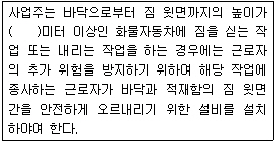
- 1.5
- 2
- 2.5
- 3
(정답률: 69%)
48. 진동에 의한 1차 설비진단법 중 정상, 비정상, 악화의 정도를 판단하기 위한 방법에 해당하지 않는 것은?
- 상호 판단
- 비교 판단
- 절대 판단
- 평균 판단
(정답률: 54%)
49. 둥근톱 기계의 방호장치에서 분할날과 톱날 원주면과의 거리는 몇 mm 이내로 조정, 유지할 수 있어야 하는가?
- 12
- 14
- 16
- 18
(정답률: 65%)
50. 산업안전보건법령에 따라 사업주가 보일러의 폭발 사고를 예방하기 위하여 유지ㆍ관리 하여야 할 안전장치가 아닌 것은?
- 압력방호판
- 화염 검출기
- 압력방출장치
- 고저수위 조절장치
(정답률: 45%)
51. 질량이 100kg인 물체를 그림과 같이 길이가 같은 2개의 와이어로프로 매달아 옮기고자 할 때 와이어로프 Ta에 걸리는 장력은 약 몇 N인가?
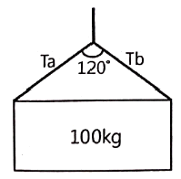
- 200
- 400
- 490
- 980
(정답률: 48%)
52. 다음 중 드릴 작업의 안전수칙으로 가장 적합한 것은?
- 손을 보호하기 위하여 장갑을 착용한다.
- 작은 일감은 양 손으로 견고히 잡고 작업한다.
- 정확한 작업을 위하여 구멍에 손을 넣어 확인한다.
- 작업시작 전 척 렌치(chuck wrench)를 반드시 제거하고 작업한다.
(정답률: 74%)
53. 산업안전보건법령에 따라 레버풀러(lever puller) 또는 체인블록(chain block)을 사용하는 경우 훅의 입구(hook mouth) 간격이 제조자가 제공하는 제품사양서 기준으로 몇 % 이상 벌어진 것은 폐기하여야 하는가?
- 3
- 5
- 7
- 10
(정답률: 55%)
54. 금형의 설치, 해체, 운반 시 안전사항에 관한 설명으로 틀린 것은?
- 운반을 위하여 관통 아이볼트가 사용될 때는 구멍 틈새가 최소화되도록 한다.
- 금형을 설치하는 프레스의 T홈 안길이는 설치 볼트 지름의 1/2배 이하로 한다.
- 고정볼트는 고정 후 가능하면 나사산이 3~4개 정도 짧게 남겨 설치 또는 해체 시 슬라이드 면과의 사이에 협착이 발생하지 않도록 해야 한다.
- 운반 시 상부금형과 하부금형이 닿을 위험이 있을 때는 고정 패드를 이용한 스트랩, 금속재질이나 우레탄 고무의 블록 등을 사용한다.
(정답률: 71%)
55. 밀링작업의 안전조치에 대한 설명으로 적절하지 않은 것은?
- 절삭 중의 칩 제거는 칩 브레이커로 한다.
- 공작물을 고정할 때에는 기계를 정지시킨 후 작업한다.
- 강력절삭을 할 경우에는 공작물을 바이스에 깊게 물려 작업한다.
- 가공 중 공작물의 치수를 측정할 때에는기계를정지시킨 후 측정한다.
(정답률: 70%)
56. 산업안전보건법령에 따라 아세틸렌 용접장치의 아세틸렌 발생기를 설치하는 경우, 발생기실의 설치장소에 대한 설명 중 A, B에 들어갈 내용으로 옳은 것은?
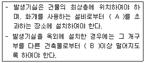
- A: 1.5m, B: 3m
- A: 2m, B: 4m
- A: 3m, B: 1.5m
- A: 4m, B: 2m
(정답률: 66%)
57. 프레스기의 방호장치 중 위치제한형 방호장치에 해당되는 것은?
- 수인식 방호장치
- 광전자식 방호장치
- 손쳐내기식 방호장치
- 양수조작식 방호장치
(정답률: 54%)
58. 프레스 방호장치 중 수인식 방호장치의 일반구조에 대한 사항으로 틀린 것은?
- 수인끈의 재료는 합성섬유로 지름이 4mm이상이어야 한다.
- 수인끈의 길이는 작업자에 따라 임의로 조정할 수 없도록 해야 한다.
- 수인끈의 안내통은 끈의 마모와 손상을 방지할 수 있는 조치를 해야 한다.
- 손목밴드(wrist band)의 재료는 유연한 내유성 피혁 또는 이와 동등한 재료를 사용해야 한다.
(정답률: 66%)
59. 산업안전보건법령에 따라 원동기ㆍ회전축 등의 위험 방지를 위한 설명 중 괄호 안에 들어갈 내용은?
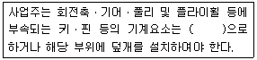
- 개방형
- 돌출형
- 묻힘형
- 고정형
(정답률: 78%)
60. 공기압축기의 방호장치가 아닌 것은?
- 언로드 밸브
- 압력방출장치
- 수봉식 안전기
- 회전부의 덮개
(정답률: 48%)
4과목: 전기위험방지기술
61. 아래 그림과 같이 인체가 전기설비의 외함에 접촉하였을 때 누전사고가 발생하였다. 인체통과전류(mA)는 약 얼마인가?
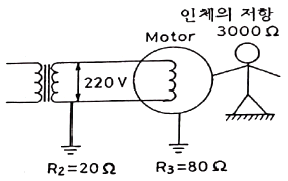
- 35
- 47
- 58
- 66
(정답률: 45%)
62. 전기화재 발생 원인으로 틀린 것은?
- 발화원
- 내화물
- 착화물
- 출화의 경과
(정답률: 58%)
63. 사용전압이 380V인 전동기 전로에서 절연저항은 몇 MΩ 이상이어야 하는가?(관련 규정 개정전 문제로 여기서는 기존 정답인 3번을 누르면 정답 처리됩니다. 자세한 내용은 해설을 참고하세요.)
- 0.1
- 0.2
- 0.3
- 0.4
(정답률: 77%)
64. 정전에너지를 나타내는 식으로 알맞은 것은? (단, Q는 대전 전하량, C는 정전용량이다.)
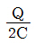
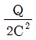
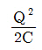
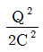
(정답률: 63%)
65. 누전차단기의 설치가 필요한 것은?
- 이중절연 구조의 전기기계ㆍ기구
- 비접지식 전로의 전기기계ㆍ기구
- 절연대 위에서 사용하는 전기기계ㆍ기구
- 도전성이 높은 장소의 전기기계ㆍ기구
(정답률: 59%)
66. 동작 시 아크를 발생하는 고압용 개폐기ㆍ차단기ㆍ피뢰기 등은 목재의 벽 또는 천장 기타의 가연성 물체로부터 몇 m 이상 떼어놓아야 하는가?
- 0.3
- 0.5
- 1.0
- 1.5
(정답률: 47%)
67. 6600/100V, 15kVA의 변압기에서 공급하는 저압 전선로의 허용 누설전류는 몇 A를 넘지 않아야 하는가?
- 0.025
- 0.045
- 0.075
- 0.085
(정답률: 48%)
68. 이동하여 사용하는 전기기계기구의 금속제 외함등에 제1종 접지공사를 하는 경우, 접지선 중 가요성을 요하는 부분의 접지선 종류와 단면적의 기준으로 옳은 것은?(관련 규정 개정전 문제로 여기서는 기존 정답인 4번을 누르면 정답 처리됩니다. 자세한 내용은 해설을 참고하세요.)
- 다심코드, 0.75mm2 이상
- 다심캡타이어 케이블, 2.5mm2 이상
- 3종 클로로프렌캡타이어 케이블, 4mm2 이상
- 3종 클로로프렌캡타이어 케이블, 10mm2 이상
(정답률: 69%)
69. 정전기 발생에 대한 방지대책의 설명으로 틀린 것은?
- 가스용기, 탱크 등의 도체부는 전부 접지한다.
- 배관 내 액체의 유속을 제한한다.
- 화학섬유의 작업복을 착용한다.
- 대전 방지제 또는 제전기를 사용한다.
(정답률: 77%)
70. 정전기의 유동대전에 가장 크게 영향을 미치는 요인은?
- 액체의 밀도
- 액체의 유동속도
- 액체의 접촉면적
- 액체의 분출온도
(정답률: 74%)
71. 과전류에 의해 전선의 허용전류보다 큰 전류가 흐르는 경우 절연물이 화구가 없더라도 자연히 발화하고 심선이 용단되는 발화단계의 전선 전류밀도(A/mm2)는?
- 10 ~ 20
- 30 ~ 50
- 60 ~ 120
- 130 ~ 200
(정답률: 62%)
72. 방폭구조에 관계있는 위험 특성이 아닌 것은?
- 발화 온도
- 증기 밀도
- 화염 일주한계
- 최소 점화전류
(정답률: 61%)
73. 금속관의 방폭형 부속품에 대한 설명으로 틀린 것은?
- 재료는 아연도금을 하거나 녹이 스는 것을 방지하도록 한 강 또는 가단주철일 것
- 안쪽 면 및 끝부분은 전선의 피복을 손상하지 않도록 매끈한 것일 것
- 전선관과의 접속부분의 나사는 5턱 이상 완전히 나사결합이 될 수 있는 길이일 것
- 완성품은 유입방폭구조의 폭발압력시험에 적합할 것
(정답률: 46%)
74. 접지의 목적과 효과로 볼 수 없는 것은?
- 낙뢰에 의한 피해방지
- 송배전선에서 지락사고의 발생 시 보호계전기를 신속하게 작동시킴
- 설비의 절연물이 손상되었을 때 흐르는 누설전류에 의한 감전방지
- 송배전선로의 지락사고 시 대지전위의 상승을 억제하고 절연강도를 상승시킴
(정답률: 59%)
75. 방폭전기설비의 용기내부에 보호가스를 압입하여 내부압력을 외부 대기 이상의 압력으로 유지함으로써 용기 내부에 폭발성가스 분위기가 형성되는 것을 방지하는 방폭구조는?
- 내압 방폭구조
- 압력 방폭구조
- 안전중 방폭구조
- 유입 방폭구조
(정답률: 49%)
76. 1종 위험장소로 분류되지 않는 것은?
- 탱크류의 벤트(Vent) 개구부 부근
- 인화성 액체 탱크 내의 액면 상부의 공간부
- 점검수리 작업에서 가연성 가스 또는 증기를 방출하는 경우의 밸브 부근
- 탱크롤리, 드럼관 등이 인화성 액체를 충전하고 있는 경우의 개구부 부근
(정답률: 57%)
77. 기중 차단기의 기호로 옳은 것은?
- VCB
- MCCB
- OCB
- ACB
(정답률: 57%)
78. 누전사고가 발생될 수 있는 취약 개소가 아닌 것은?
- 나선으로 접속된 분기회로의 접속점
- 전선의 열화가 발생한 곳
- 부도체를 사용하여 이중절연이 되어 있는 곳
- 리드선과 단자와의 접속이 불량한 곳
(정답률: 85%)
79. 지락전류가 거의 0에 가까워서 안정도가 양호하고 무정전의 송전이 가능한 접지방식은?
- 직접접지방식
- 리액터접지방식
- 저항접지방식
- 소호리액터접지방식
(정답률: 59%)
80. 피뢰기가 갖추어야 할 특성으로 알맞은 것은?
- 충격방전 개시전압이 높을 것
- 제한 전압이 높을 것
- 뇌전류의 방전 능력이 클 것
- 속류를 차단하지 않을 것
(정답률: 64%)
5과목: 화학설비위험방지기술
81. 고체의 연소형태 중 증발연소에 속하는 것은?
- 나프탈렌
- 목재
- TNT
- 목탄
(정답률: 78%)
82. 산업안전보건법령상 “부식성 산류”에 해당하지 않는 것은?
- 농도 20%인 염산
- 농도 40%인 인산
- 농도 50%인 질산
- 농도 60%인 아세트산
(정답률: 49%)
83. 뜨거운 금속에 물이 닿으면 튀는 현상과 같이 핵비등(nucleate boiling) 상태에서 막비등(film boiling)으로 이행하는 온도를 무엇이라 하는가?
- Burn-out point
- Leidenfrost point
- Entrainment point
- Sub-cooling boiling point
(정답률: 55%)
84. 위험물의 취급에 관한 설명으로 틀린 것은?
- 모든 폭발성 물질은 석유류에 침지시켜 보관해야 한다.
- 산화성 물질의 경우 가연물과의 접촉을 피해야 한다.
- 가스 누설의 우려가 있는 장소에서는 점화원의 철저한 관리가 필요하다.
- 도전성이 나쁜 액체는 정전기 발생을 방지하기 위한 조치를 취한다.
(정답률: 81%)
85. 이상반응 또는 폭발로 인하여 발생되는 압력의 방출장치가 아닌 것은?
- 파열판
- 폭압방산구
- 화염방지기
- 가용합금안전밸브
(정답률: 63%)
86. 분진폭발의 특징으로 옳은 것은?
- 연소속도가 가스폭발보다 크다.
- 완전연소로 가스중독의 위험이 작다.
- 화염의 파급속도보다 압력의 파급속도가 크다.
- 가스 폭발보다 연소시간은 짧고 발생에너지는 작다.
(정답률: 68%)
87. 독성가스에 속하지 않은 것은?
- 암모니아
- 황화수소
- 포스겐
- 질소
(정답률: 72%)
88. Burgess-Wheeler의 법칙에 따르면 서로 유사한 탄화수소계의 가스에서 폭발하한계의 농도(vol%)와 연소열(kcal/mol)의 곱의 값은 약 얼마 정도인가?
- 1100
- 2800
- 3200
- 3800
(정답률: 53%)
89. 위험물안전관리법령상 제3류 위험물 중 금수성 물질에 대하여 적응성이 있는 소화기는?
- 포소화기
- 이산화탄소소화기
- 할로겐화합물소화기
- 탄산수소염류분말소화기
(정답률: 50%)
90. 공기 중에서 이황화탄소(CS2)의 폭발한계는 하한값이 1.25vol%, 상한값이 44vol%이다. 이를 20℃ 대기압하에서 mg/L의 단위로 환산하면 하한값과 상한값은 각각 약 얼마인가? (단, 이황화탄소의 분자량은 76.1 이다.)
- 하한값:61, 상한값:640
- 하한값:39.6, 상한값:1393
- 하한값:146, 상한값:860
- 하한값:55.4, 상한값:1642
(정답률: 50%)
91. 일산화탄소에 대한 설명으로 틀린 것은?
- 무색ㆍ무취의 기체이다.
- 염소와 촉매 존재 하에 반응하여 포스겐이 된다.
- 인체 내의 헤모글로빈과 결합하여 산소운반기능을 저하시킨다.
- 불연성가스로서, 허용농도가 10ppm이다.
(정답률: 70%)
92. 금속의 용접ㆍ용단 또는 가열에 사용되는 가스 등의 용기를 취급할 떄의 준수사항으로 틀린 것은?
- 전도의 위험이 없도록 한다.
- 밸브를 서서히 개폐한다.
- 용해아세틸렌의 용기는 세워서 보관한다.
- 용기의 온도를 섭씨 65도 이하로 유지한다.
(정답률: 76%)
93. 산업안전보건법령상 건조설비를 사용하여 작업을 하는 경우 폭발 또는 화재를 예방하기 위하여 준수하여야 하는 사항으로 적절하지 않은 것은?
- 위험물 건조설비를 사용하는 때에는 미리 내부를 청소하거나 환기할 것
- 위험물 건조설비를 사용하는 때에는 건조로 인하여 발생하는 가스ㆍ중기 또는 분진에 의하여 폭발ㆍ화재의 위험이 있는 물질을 안전한 장소로 배출시킬 것
- 위험물 건조설비를 사용하여 가열건조하는 건조물은 쉽게 이탈되도록 할 것
- 고온으로 가열건조한 가연성 물질은 발화의 위험이 없는 온도로 냉각한 후에 격납시킬 것
(정답률: 84%)
94. 유류저장탱크에서 화염의 차단을 목적으로 외부에 증기를 방출하기도 하고 탱크 내 외기를 흡입하기도 하는 부분에 설치하는 안전장치는?
- vent stack
- safety valve
- gate valve
- flame arrester
(정답률: 68%)
95. 다음 중 공기와 혼합 시 최소착화에너지 값이 가장 작은 것은?
- CH4
- C3H8
- C6H6
- H2
(정답률: 64%)
96. 펌프의 사용 시 공동현상(cavitation)을 방지하고자 할 때의 조치사항으로 틀린 것은?
- 펌프의 회전수를 높인다.
- 흡입비 속도를 작게 한다.
- 펌프의 흡입관의 두(head) 손실을 줄인다.
- 펌프의 설치높이를 낮추어 흡입양정을 짧게 한다.
(정답률: 72%)
97. 다음 중 연소속도에 영향을 주는 요인으로 가장 거리가 먼 것은?
- 가연물의 색상
- 촉매
- 산소와의 혼합비
- 반응계의 온도
(정답률: 83%)
98. 기체의 자연발화온도 측정법에 해당하는 것은?
- 중량법
- 접촉법
- 예열법
- 발열법
(정답률: 48%)
99. 디에틸에테르와 에틸알코올이 3:1로 혼합증기의 몰비가 각각 0.75, 0.25이고, 디에틸에테르와 에틸알코올의 폭발하한값이 각각 1.9vol%, 4.3vol%일 때 혼합가스의 폭발하한값은 약 몇 vol%인가?
- 2.2
- 3.5
- 22.0
- 34.7
(정답률: 59%)
100. 프로판가스 1m3를 완전 연소시키는데 필요한 이론 공기량은 몇 m3인가? (단, 공기 중의 산소농도는 20vol%이다.)
- 20
- 25
- 30
- 35
(정답률: 52%)
6과목: 건설안전기술
101. 다음은 동바리로 사용하는 파이프 서포트의 설치기준이다. ( )안에 들어갈 내용으로 옳은 것은?
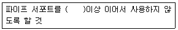
- 2개
- 3개
- 4개
- 5개
(정답률: 77%)
102. 콘크리트 타설 시 거푸집 측압에 관한 설명으로 옳지 않은 것은?
- 타설속도가 빠를수록 측압이 커진다.
- 거푸집의 투수성이 낮을수록 측압은 커진다.
- 타설높이가 높을수록 측압이 커진다.
- 콘크리트의 온도가 높을수록 측압이 커진다.
(정답률: 65%)
103. 권상용 와이어로프의 절단하중이 200ton일 때 와이어로프에 걸리는 최대하중은? (단, 안전계수는 5임)
- 1000ton
- 400ton
- 100ton
- 40ton
(정답률: 59%)
104. 터널지보공을 설치한 경우에 수시로 점검하고, 이상을 발견한 경우에는 즉시 보강하거나 보수해야 할 사항이 아닌 것은?
- 부재의 긴압 정도
- 기둥침하의 유무 및 상태
- 부재의 접속부 및 교차부 상태
- 부재를 구성하는 재질의 종류 확인
(정답률: 73%)
1⑤. 선창의 내부에서 화물취급작업을 하는 근로자가 안전하게 통행할 수 있는 설비를 설치하여야 하는 기준은 갑판의 윗면에서 선창 밑바닥까지의 깊이가 최소 얼마를 초과할 떄 인가?
- 1.3m
- 1.5m
- 1.8m
- 2.0m
(정답률: 46%)
106. 굴착기계의 운행 시 안전대책으로 옳지 않은 것은?
- 버킷에 사람의 탑승을 허용해서는 안 된다.
- 운전반경 내에 사람이 있을 때 회전은 10rpm 정도의 느린 속도로 하여야 한다.
- 장비의 주차 시 경사지나 굴착작업장으로부터 충분히 이격시켜 주차한다.
- 전선이나 구조물 등에 인접하여 붐을 선회해야 할 작업에는 사전에 회전반경, 높이제한 등 방호조치를 강구한다.
(정답률: 79%)
107. 폭우 시 옹벽배면의 배수시설이 취약하면 옹벽 저면을 통하여 침투수(seepage)의 수위가 올라간다. 이 침투수가 옹벽의 안정에 미치는 영향으로 옳지 않은 것은?
- 옹벽 배면토의 단위수량 감소로 인한 수직 저항력 증가
- 옹벽 바닥면에서의 양압력 증가
- 수평 저항력(수동토압)의 감소
- 포화 또는 부분 포화에 따른 뒷채움용 흙무게의 증가
(정답률: 49%)
108. 그물코의 크기가 5cm인 매듭방망일 경우 방망사의 인장강도는 최소 얼마 이상이어야 하는가? (단, 방망사는 신품인 경우이다.)
- 50kg
- 100kg
- 110kg
- 150kg
(정답률: 71%)
109. 부두 등의 하역작업장에서 부두 또는 안벽의 선에 따라 통로를 설치하는 경우, 최소 폭 기준은?
- 90cm 이상
- 75cm 이상
- 60cm 이상
- 45cm 이상
(정답률: 73%)
110. 건설업 산업안전보건관리비 계상 및 사용기준(고용노동부 고시)은 산업재해보상보험법의 적용을 받는 공사 중 총 공사금액이 얼마 이상인 공사에 적용하는가?(관련 규정 개정전 문제로 여기서는 기존 정답인 1번을 누르면 정답 처리됩니다. 자세한 내용은 해설을 참고하세요.)
- 4천만원
- 3천만원
- 2천만원
- 1천만원
(정답률: 72%)
111. 가설통로를 설치하는 경우 준수하여야 할 기준으로 옳지 않은 것은?
- 경사는 30°이하로 할 것
- 경사가 15°를 초과하는 경우에는 미끄러지지 아니하는 구조로 할 것
- 수직갱에 가설된 통로의 길이가 15m 이상인 때에는 15m 이내마다 계단참을 설치할 것
- 건설공사에 사용하는 높이 8m 이상의 비계다리에는 7m 이내마다 계단참을 설치할 것
(정답률: 81%)
112. 온도가 하강함에 따라 토증수가 얼어 부피가 약 9% 정도 증대하게 됨으로써 지표면이 부풀어오르는 현상은?
- 동상현상
- 연화현상
- 리칭현상
- 액상화현상
(정답률: 74%)
113. 강관틀비계를 조립하여 사용하는 경우 준수해야할 기준으로 옳지 않은 것은?
- 높이가 20m를 초과하거나 중량물의 적재를 수반하는 작업을 할 경우에는 주틀 간의 간격을 2.4m 이하로 할 것
- 수직방향으로 6m, 수평방향으로 8m 이내마다 벽이음을 할 것
- 길이가 띠장 방향으로 4m 이하이고 높이가 10m를 초과하는 경우에는 10m 이내마다 띠장 방향으로 버팀기등을 설치할 것
- 주틀 간에 교차 가새를 설치하고 최상층 및 5층 이내마다 수평재를 설치할 것
(정답률: 50%)
114. 근로자의 추락 등의 위험을 방지하기 위한 안전난간의 구조 및 설치요건에 관한 기준으로 옳지 않은 것은?
- 상부난간대는 바닥면ㆍ발판 또는 경사로의 표면으로부터 90cm 이상 지점에 설치할 것
- 발끝막이판은 바닥면 등으로부터 10cm 이상의 높이를 유지할 것
- 난간대는 지름 1.5cm 이상의 금속제파이프나 그 이상의 강도를 가진 재료일 것
- 안전난간은 구조적으로 가장 취약한 지점에서 가장 취약한 방향으로 작용하는 100kg 이상의 하중에 견딜 수 있는 튼튼한 구조일 것
(정답률: 45%)
115. 건설공사 유해ㆍ위험방지계획서를 제출해야할 대상공사에 해당하지 않는 것은?
- 깊이 10m인 굴착공사
- 다목적댐 건설공사
- 최대 지간길이가 40m인 교량건설 공사
- 연면적 5000m2인 냉동ㆍ냉장창고시설의 설비공사
(정답률: 74%)
116. 건설현장에 달비계를 설치하여 작업 시 달비계에 사용가능한 와이어로프로 볼 수 있는 것은?
- 이음매가 있는 것
- 와이어로프의 한 꼬임에서 끊어진 소선의 수가 5%인 것
- 지름의 감소가 공칭지름의 10%인 것
- 열과 전기충격에 의해 손상된 것
(정답률: 70%)
117. 토질시험(soil test)방법 중 전단시험에 해당하지 않는 것은?
- 1면 전단 시험
- 베인 테스트
- 일축 압축 시험
- 투수시험
(정답률: 48%)
118. 철골 건립기계 선정 시 사전 검토사항과 가장 거리가 먼 것은?
- 건립기계의 소음영향
- 건립기계로 인한 일조권 침해
- 건물형태
- 작업반경
(정답률: 68%)
119. 감전재해의 직접적인 요인으로 가장 거리가 먼 것은?
- 통전전압의 크기
- 통전전류의 크기
- 통전시간
- 통전경로
(정답률: 67%)
120. 클램쉘(Clam shell)의 용도로 옳지 않은 것은?
- 잠함안의 굴착에 사용된다.
- 수면아래의 자갈, 모래를 굴착하고 준설선에 많이 사용된다.
- 건축구조물의 기초 등 정해진 범위의 깊은 굴착에 적합하다.
- 단단한 지반의 작업도 가능하며 작업속도가 빠르고 특히 암반굴착에 적합하다.
(정답률: 65%)